Enzo Fernandez
Informe de los hitos 1 a 9
El objetivo del trabajo es construir un bootloader (BL) que arranque después del reset y le entregue el control al firmware (FW), con ambos programas en una misma imagen para el simulador.
fw.hex y qué
hace?La primera palabra de fw.hex fue 00040117,
que objdump interpreta como auipc sp,0x40.
Esta instrucción suma a su propia dirección el inmediato desplazado 12
bits. En esta compilación:
sp = 0x00000000 + (0x40 << 12) = 0x00040000La instrucción ayuda a inicializar el stack pointer
(sp) con el límite superior de RAM, desde donde la pila
crece hacia direcciones menores. Proviene de
la sp, _stack_top en startup.S; la segunda
instrucción mostrada, mv sp,sp, no cambia el valor en este
caso.
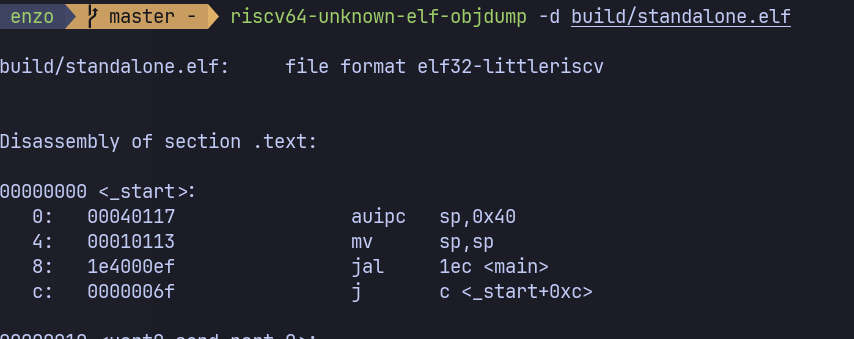
_start queda en 0x0? ¿Qué pasa si se
enlaza primero print.c?_start queda en 0x0 porque el linker ubica
.text al comienzo de FLASH y el Makefile entrega
startup.S antes de los archivos C.
ENTRY(_start) identifica el punto de entrada del ELF, pero
por sí solo no coloca _start en 0x0.
Al enlazar print.c primero, en la prueba
uart0_send.part.0 quedó en 0x0 y
_start en 0x1dc. Al salir de reset, el
procesador ejecutaría la función de impresión en lugar de preparar la
pila y llamar a main().
linker.ld y dónde quedan
int_0, int_1 e int_2?Con --orphan-handling=warn, el linker informa sobre las
secciones que el script no ubica explícitamente y que él coloca por su
cuenta. En la salida aparecieron .sbss, secciones
.debug_*, .riscv.attributes,
.comment, .note.GNU-stack y
.rela.text.
La más relevante para el test es .sbss: allí quedaron
int_0, int_1 e int_2, en RAM. El
script original incluye .bss*, pero ese patrón no coincide
con .sbss. Otra sección de solo lectura que GCC puede
generar para datos pequeños en RISC-V es .srodata.
main() y por qué el test termina
igual?El arranque original prepara sp y llama a
main, pero no copia los valores iniciales de
.data y .sdata a RAM ni pone en cero
.bss y .sbss. El linker puede ubicar esas
secciones, pero eso no significa que sus contenidos estén
inicializados.
test_fw_status termina porque no comprueba que los
resultados de las variables sean correctos: ejecuta sus operaciones,
imprime y finalmente escribe 0xFF en
REG_FW_STATUS. Que termine no demuestra que el arranque
haya inicializado las variables según lo que espera C.
.vectors se coloca primero y se usa KEEP?
¿Qué va en las posiciones no utilizadas?La tabla .vectors se coloca primero en
BL_ROM, que empieza en 0x0. KEEP
evita que el linker la descarte con --gc-sections. En las
posiciones 0x04, 0x08 y 0x0C, que
no son vectores en esta configuración, coloqué saltos a
bl_unexpected: si se ejecutan por error, conducen a un
manejador conocido. También se usa ese manejador para el vector de IRQ
en 0x10.
Un ASSERT comprueba que _bl_vectors
coincida con el inicio de BL_ROM y hace fallar el enlace si
la tabla queda en otra dirección.
En PicoRV32, el procesador ejecuta la instrucción ubicada en la
dirección de reset, por eso allí hay un salto. En Cortex-M, el hardware
lee los primeros valores de la tabla como datos: el valor inicial de
sp y la dirección del manejador de reset.
sp y dónde se coloca la
pila?El software inicializa sp porque
STACKADDR = 0xFFFF_FFFF indica que el core no lo hace
automáticamente. bl_reset_handler carga
_bl_stack_top antes de llamar a bl_main. Se
eligió el límite superior de RAM, 0x40000, calculado a
partir de memory_map.ld; la pila crece hacia direcciones
menores.
.data y .bss? ¿Cómo se
controla?Para este TP se eligió que el BL no use datos globales que requieran
inicializar .data o .bss. Los
ASSERT de bl.ld comprueban que esas secciones
queden vacías después de la eliminación de secciones no usadas. El BL sí
puede usar variables locales en la pila y constantes en memoria de solo
lectura.
KEEP?El firmware se ubica en APP_ROM, desde
0x1000. __fw_start marca el comienzo y
KEEP(*(.fw_header)) conserva el header, que el BL busca en
esa dirección.
.data? ¿Para qué sirven sus
símbolos?La sección .data tiene dos direcciones:
APP_ROM.El arranque copia desde _sidata (LMA) hasta
_sdata en RAM, y usa _edata como límite. La
copia inicial no mantiene las dos ubicaciones sincronizadas: si luego
cambia la variable en RAM, el valor de la imagen no cambia.
.bss y dónde termina la imagen?.bss está en RAM y no necesita guardar sus ceros en la
imagen. El arranque recorre desde _sbss hasta
_ebss y escribe cero; _ebss es el límite
exclusivo. __fw_end se calcula sumando la dirección de
carga y el tamaño de .data, que es lo último cargable en
este diseño. Luego, __fw_size = __fw_end - __fw_start da el
tamaño de la imagen.
En una inspección anterior a completar el arranque,
.data estaba vacía porque el código del test no quedaba
incluido. Para observar el caso con datos, compilé una prueba
conservando el código y las variables de test_data_bss.c.
Esta prueba temporaria corresponde a una compilación distinta de la que
se muestra en el hito 8.
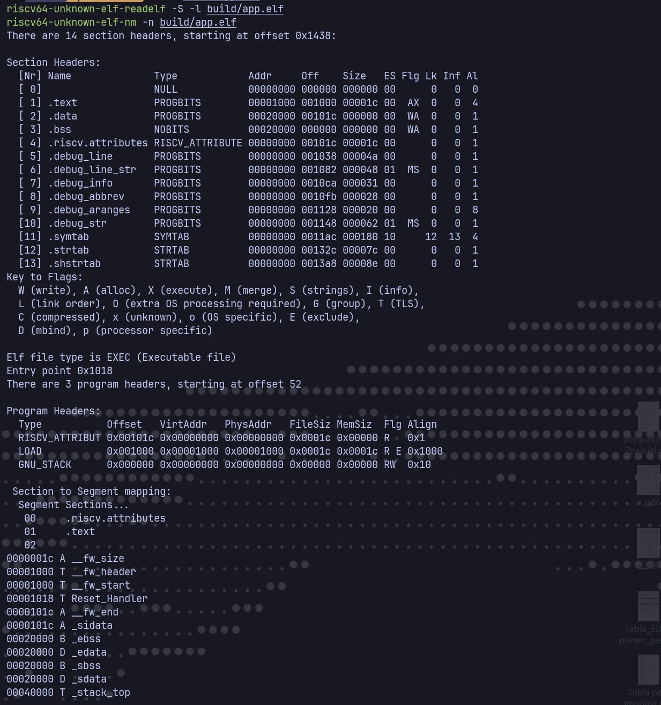
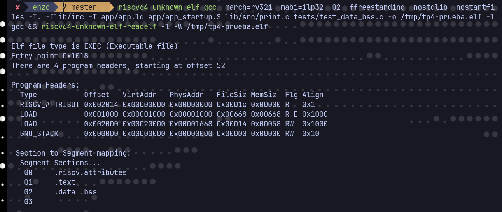
image_crc?El header contiene metadatos del firmware: información que describe la imagen y le indica al bootloader cómo arrancarla. Es como una etiqueta al comienzo del firmware: indica dónde fue enlazado, cuánto ocupa, qué CRC tiene, dónde comienza su pila y a qué dirección debe saltar el BL.
Sus campos son magic, load_addr,
image_size, image_crc, initial_sp
y reset_handler. El linker aporta las direcciones y el
tamaño; el CRC se deja inicialmente como FW_IMAGE_CRC_UNSET
(0xFFFFFFFF) porque se calcula después del enlace.
mkimage.py lo calcula sobre la imagen construida y escribe
el resultado en la imagen final.
Reset_Handler y por qué vuelve a cargar
sp?El Reset_Handler carga sp, copia
.data y .sdata desde la imagen a RAM,
inicializa .bss y .sbss en cero y llama a
main. Aunque el BL ya haya cargado sp, el
firmware vuelve a hacerlo para configurar su propia pila sin depender de
cómo llegó al arranque.
main vuelve sin indicar éxito y no se ejecuta
ebreak?Si main retorna sin dejar REG_FW_STATUS en
0xFF, el arranque ejecuta ebreak: de otro modo
la simulación podría seguir esperando sin una señal clara del error.
Para detectar ese trap, en esta plataforma se conectó la señal
correspondiente en el testbench.
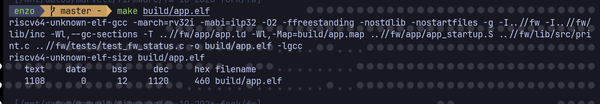
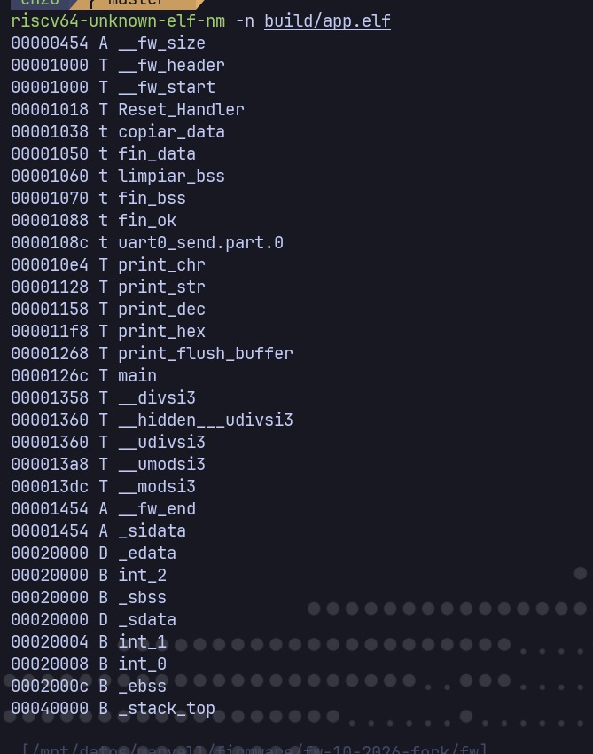
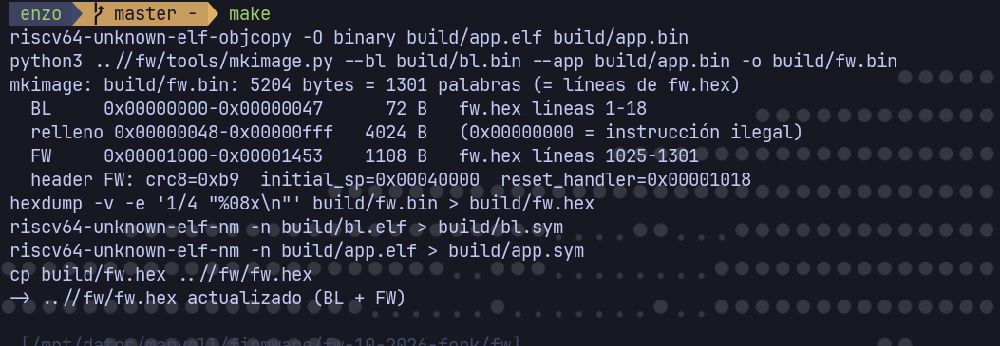
El BL informa por UART que arrancó, escribe marcas de progreso en
REG_FW_REPORT y lee initial_sp y
reset_handler del header. Después llama:
bl_jump(hdr->initial_sp, hdr->reset_handler);Según la ABI RISC-V, el primer argumento llega en a0 y
el segundo en a1. La implementación ensambladora carga
sp desde a0 y salta a la dirección de
a1:
mv sp, a0
la ra, bl_unexpected
jr a1Se usa jr porque el BL entrega el control y no espera
que el firmware vuelva. Se deja bl_unexpected en
ra como resguardo ante un retorno inesperado usando ese
valor.
El recorrido es
reset → BL → bl_main → bl_jump → Reset_Handler → main. La
simulación mostró el mensaje del BL seguido de
test_fw_status y terminó con
REGISTER_FW_STATUS = 000000ff.
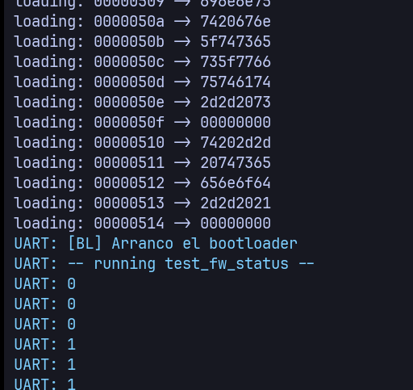
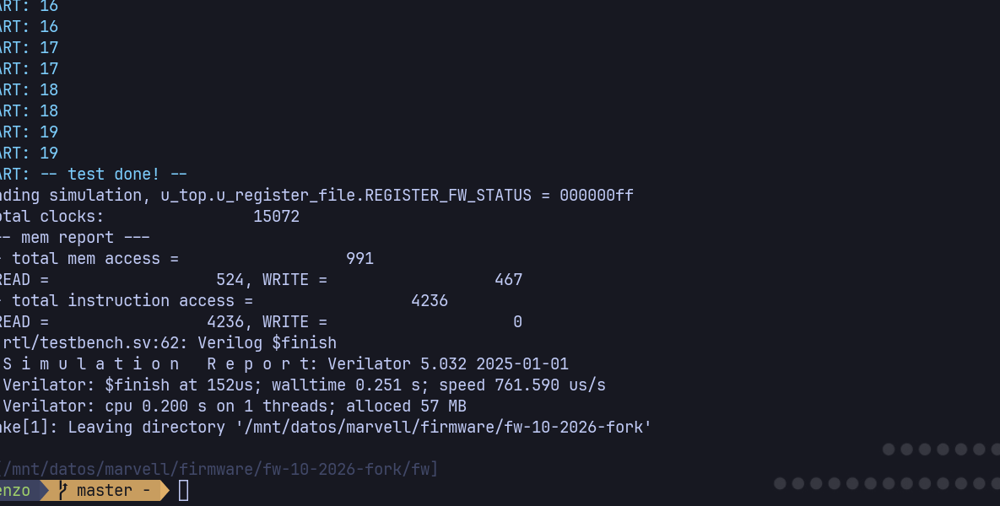
.data y .bssEjecuté test_data_bss.c con el flujo combinado y con
STANDALONE=1:
make sim APP_SRC="print.c test_data_bss.c"
make sim APP_SRC="print.c test_data_bss.c" STANDALONE=1Con el nuevo arranque el test dio PASS. En modo
standalone dio FAIL porque startup.S no
copia los valores iniciales de .data y .sdata
desde la imagen a RAM: tp4_data_word se leyó como
0, en lugar de 0x1234ABCD. El arranque
original tampoco inicializa .bss y .sbss; el
primer error mostrado por el test fue el de .sdata.
La comprobación de .data muestra que los valores
iniciales se copiaron correctamente. El resultado de .bss
tiene un límite: la RAM del simulador ya arranca en cero, por lo que ver
ceros no demuestra por sí solo que el bucle de inicialización los haya
escrito.
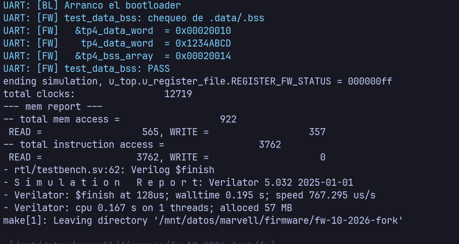
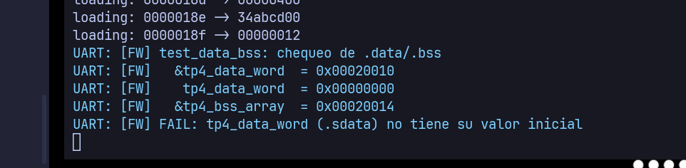
El header contiene metadatos que el BL revisa antes de ejecutar el firmware. El BL comprueba, en orden:
magic coincida con el identificador esperado.load_addr coincida con el inicio del espacio
reservado al FW.image_size alcance para el header y no exceda el
espacio disponible, antes de leer los bytes para el CRC.image_crc.initial_sp esté en los límites permitidos de RAM y
alineado a 16 bytes.reset_handler esté dentro de la imagen y alineado a
4 bytes.str_crc8 calcula el CRC-8 desde el offset
0x10 hasta el final de la imagen, con polinomio
0x07 y valor inicial 0xFF. El CRC ayuda a
detectar corrupción; no garantiza detectar todos los errores ni
identifica al autor de la imagen.
Si una comprobación falla, bl_fail informa el error por
UART, escribe la marca y el código en REG_FW_REPORT, deja
0xBAD en REG_FW_STATUS y llama a
bl_halt, que ejecuta ebreak. Con
CORRUPT=1 se modificó un bit después de calcular el CRC; el
BL informó Error: CRC invalido y la simulación terminó con
TRAP!, sin saltar al firmware.
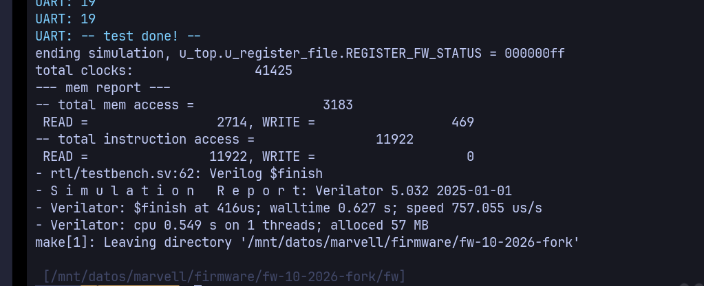
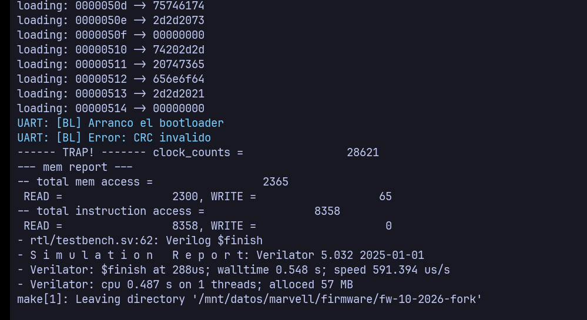
Cada línea de build/fw.hex contiene una palabra de 4
bytes. Para una línea N, la dirección es 4 × (N − 1).
0x0: 0140006f, salto
inicial del bootloader.0x1000: 46345054,
valor magic del header.Los archivos bl.map y app.map muestran la
ubicación de secciones y símbolos de cada ejecutable.
objdump -d y objdump -s?objdump -d build/bl.elf muestra los saltos de la tabla
del BL, incluidos los de 0x0 y 0x10.
objdump -s -j .text build/app.elf muestra los bytes del
header. El magic se ve como 54 50 34 46 en
memoria porque la plataforma usa little-endian;
fw.hex muestra la palabra completa como
46345054.
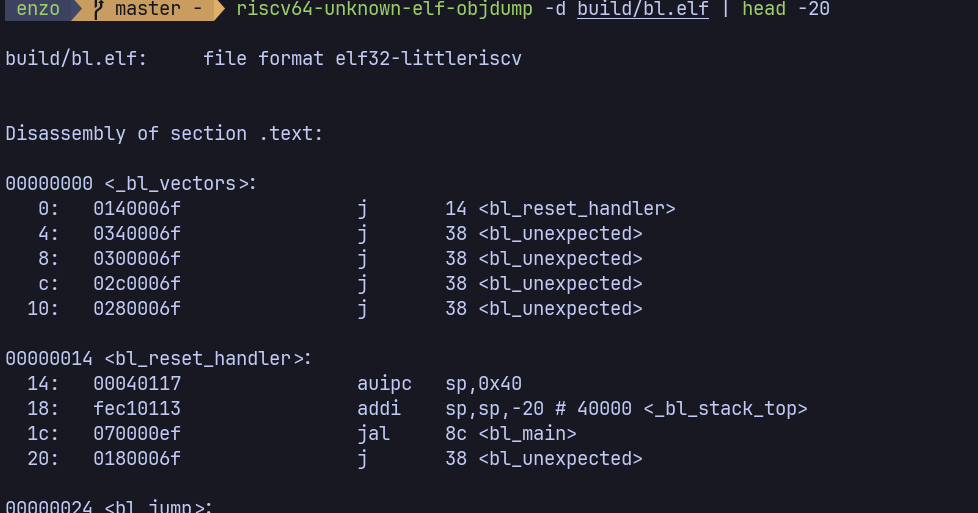
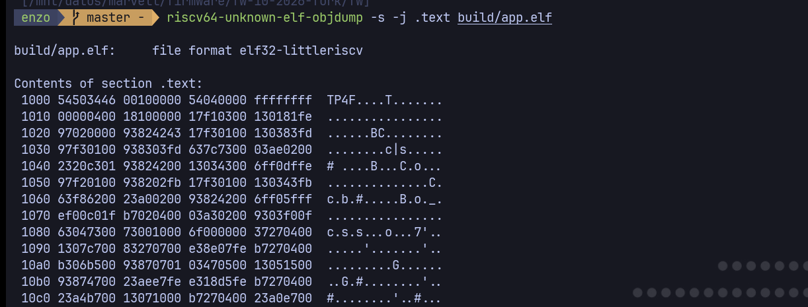
nm y el punto de
entrada?La palabra en 0x1014 —línea 1030 de fw.hex—
contiene 0x1018. La salida de nm ubica allí el
símbolo Reset_Handler, y readelf indica la
misma dirección como punto de entrada del ELF. Así, la dirección
guardada en el header coincide con el arranque del firmware.
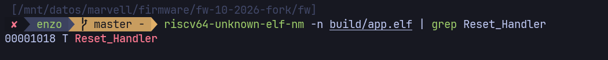
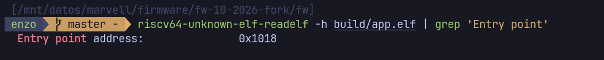
.data y .bss con el linker y el
resultado del test?En la compilación del test, nm mostró
_sidata = 0x16d8, _sdata = 0x20000,
_edata = _sbss = 0x20014, _ebss = 0x20058 y
_stack_top = 0x40000. El readelf permite ver
la VMA en RAM y la dirección de carga de .data dentro de
APP_ROM.
El test imprimió tp4_data_word en 0x20010,
dentro de .data, con el valor 0x1234ABCD;
tp4_bss_array comenzó en 0x20014, dentro de
.bss. El resultado fue PASS. Como se
aclaró en el hito 6, el cero observado en .bss no prueba
por sí solo que el arranque lo haya escrito, porque la RAM simulada ya
comienza en cero.
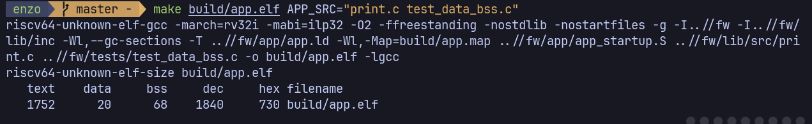
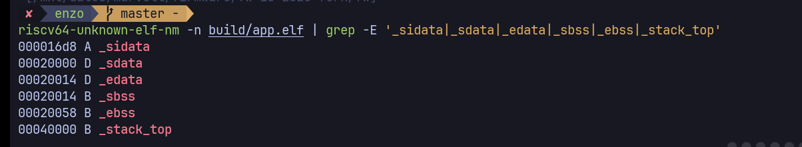
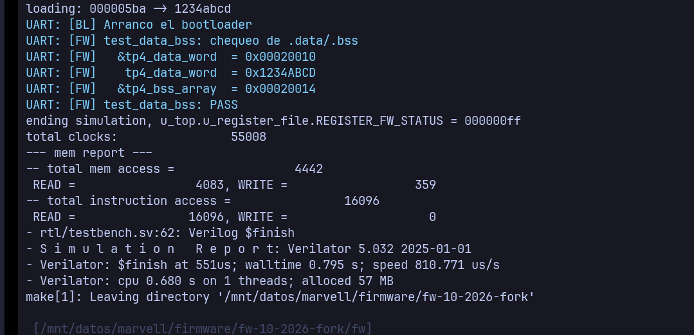
make check comparó build/fw.hex con las
palabras loading: ... del log de simulación y mostró
RESULTADO: OK. El índice de cada línea
loading es un índice de palabra; para obtener la dirección
en bytes se multiplica por 4.
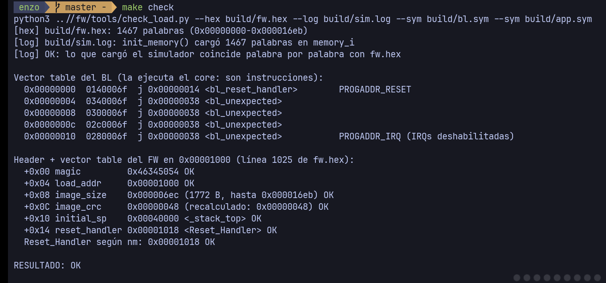
En PicoRV32 se ejecuta la instrucción que se encuentra en la
dirección de reset; en Cortex-M el hardware lee de la tabla el valor
inicial de sp y la dirección del manejador. Son
comportamientos de arranque diferentes de cada arquitectura.
El Makefile compila y enlaza por separado el BL y el firmware en sus
respectivos ELF, genera binarios con objcopy, arma una
imagen combinada con mkimage.py, la convierte a palabras
hexadecimales e instala fw/fw.hex. También genera mapas y
símbolos; make sim ejecuta la simulación y
make check compara la carga.
Se enlazan bl.elf y app.elf por separado
porque usan scripts y regiones diferentes: el BL comienza en
0x0 y el firmware en 0x1000. Para
.data, objcopy -O binary usa la LMA, donde
están los valores iniciales en la imagen. mkimage.py agrega
un padding de ceros entre el BL y el firmware para que
este comience en 0x1000; también calcula el CRC y lo
escribe en el header.
0x100C?En app.elf, image_crc contiene el valor
provisional 0xFFFFFFFF. Después del enlace,
mkimage.py calcula el CRC sobre la imagen y lo escribe en
la imagen final; por eso la palabra en fw.hex es
distinta.
Las instrucciones que no dependen de direcciones pueden mantenerse iguales. Los saltos relativos también conservan su código cuando la distancia entre origen y destino no cambia; si cambia esa distancia o una dirección que debe construirse, el linker puede ajustar las instrucciones.
En la comparación de print_str,
lbu a5,0(a0) fue 00054783 tanto en
0x00ac del standalone como en 0x1128 de la
app. El salto condicional 02078463 también se conservó: en
ambos casos el destino estaba a 0x28 bytes. Las diferencias
entre ambos ejecutables no se deben exclusivamente a la relocalización,
porque el arranque nuevo también es diferente.
Como ejemplo de una dirección que cambió, en main el
standalone carga la dirección de una cadena con li a0,1180
(0x49c); en la app enlazada en 0x1000 se
construye la dirección 0x1548 mediante lui y
addi. Las direcciones y el código cambian porque la cadena
quedó en otra posición, y la diferencia de arranque y de distribución
también influye en esta comparación.
jr y por qué volver a cargar sp?jr transfiere el control sin crear una nueva dirección
de retorno: el BL no espera que el firmware vuelva. El firmware vuelve a
cargar sp para preparar su pila por sí mismo, aunque en el
recorrido normal el BL ya haya colocado el mismo valor.
0xFF y 0xBAD?El BL no debe escribir 0xFF: ese valor le indica al
simulador que el firmware terminó correctamente y podría hacer que la
simulación finalice antes del salto. En caso de error,
0xBAD deja una marca, pero no es la condición de éxito ni
detiene por sí solo la simulación. Por eso el BL ejecuta
ebreak para provocar un trap; la simulación debe observar
esa señal.
strutils.c quedan en el BL?En bl.elf queda str_crc8, porque el
bootloader la utiliza para validar la imagen. Las demás funciones no
utilizadas se descartan con --gc-sections y la compilación
por función. El CRC no necesita llamadas a la biblioteca estándar.
.option norvc?Si se compila con instrucciones comprimidas, algunos saltos podrían
ocupar 2 bytes en lugar de 4. Como la tabla usa saltos consecutivos, las
posiciones cambiarían y el vector de IRQ podría no quedar en
0x10. .option norvc mantiene instrucciones de
4 bytes en esa tabla.
La consigna indica no modificar el RTL ni la configuración de la
plataforma. Sin embargo, durante la prueba con CORRUPT=1,
la simulación quedaba ejecutándose porque la señal trap del
testbench original no estaba conectada a la salida del procesador. Para
poder observar el error y finalizar la prueba, se conectó esa señal en
rtl/testbench.sv a u_top.trap.
Con esa modificación, la prueba mostró el mensaje de CRC inválido y
terminó con TRAP!. El cambio se deja aclarado porque afecta
a un archivo del testbench fuera de fw/ y se aparta de la
restricción indicada en la consigna.